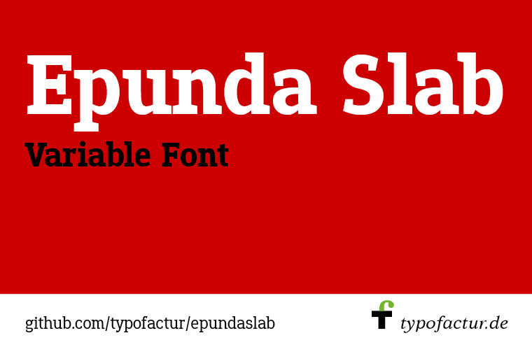
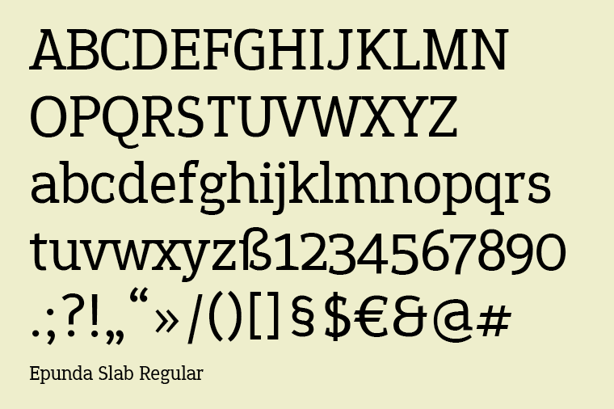
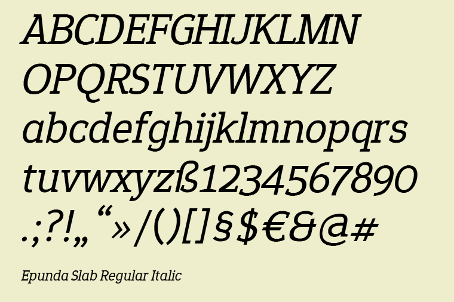
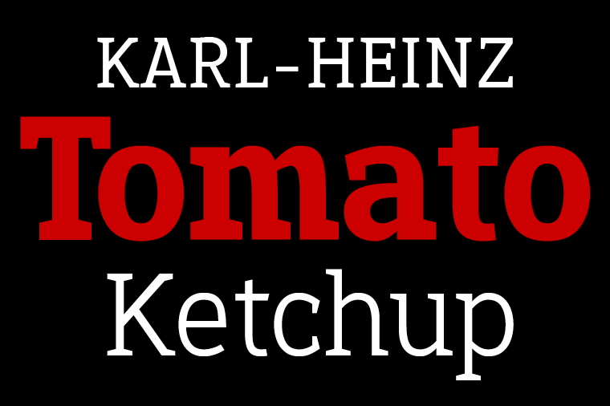
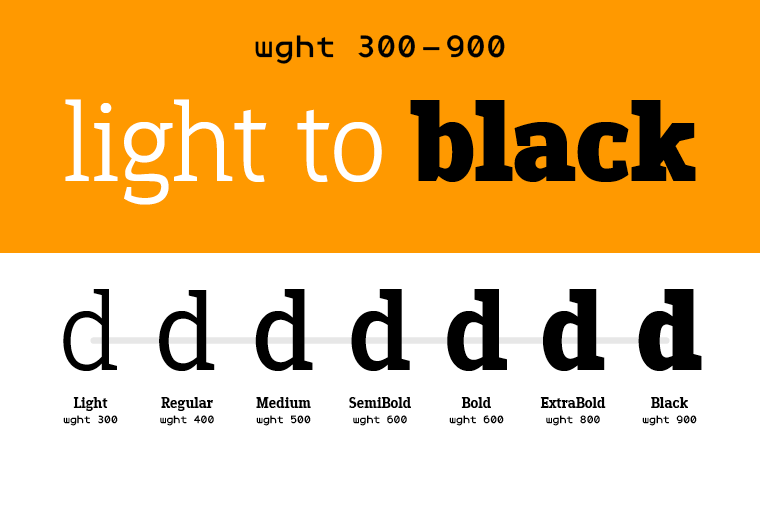
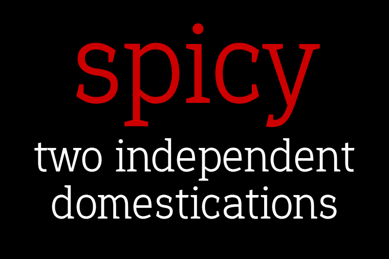
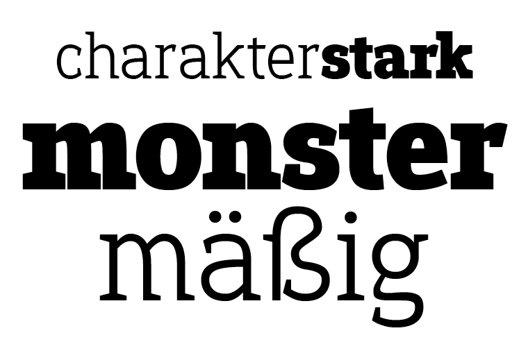
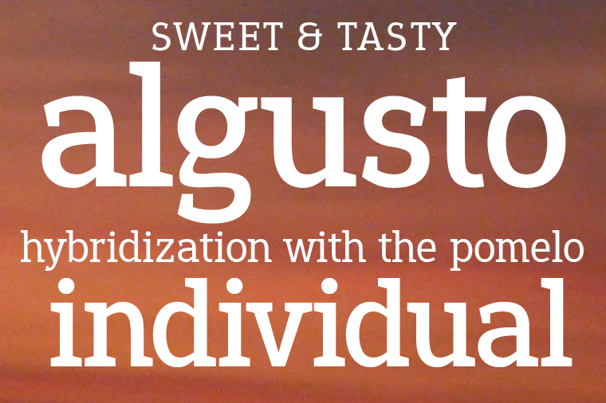

<p>Epunda Slab is the perfect companion of Epunda Sans. The sturdy, angled serifs give the font a robust and traditional look. Epundas Sans is a variable font with a weight axis that ranges from Light (300) to Black (900).</p>









